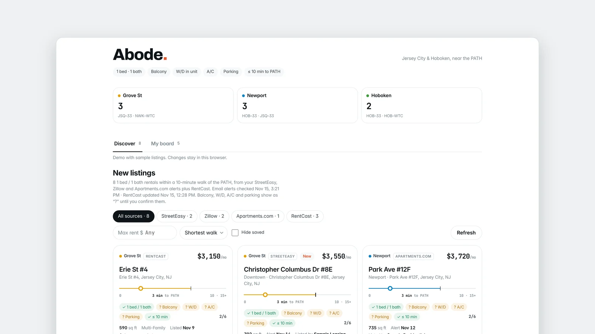
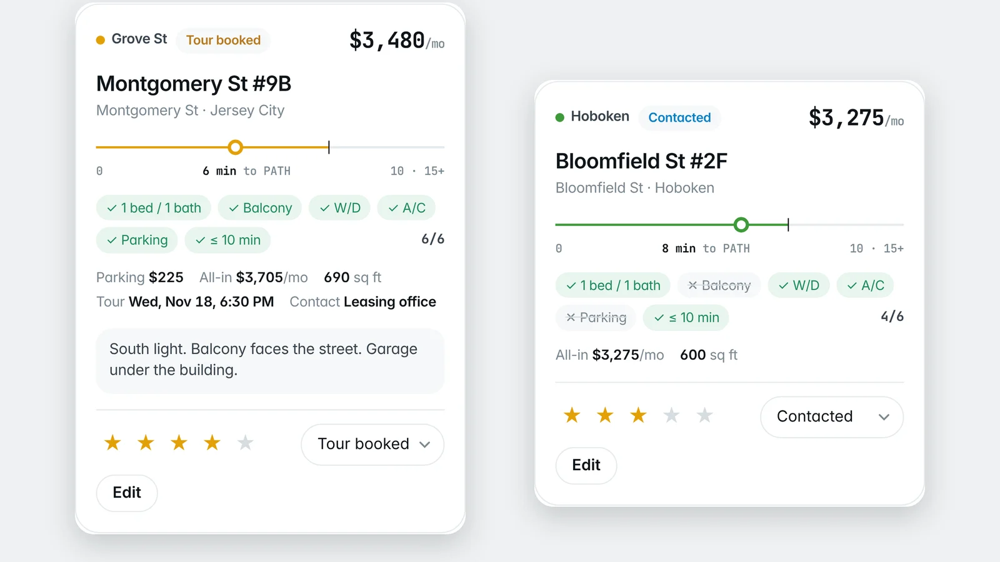
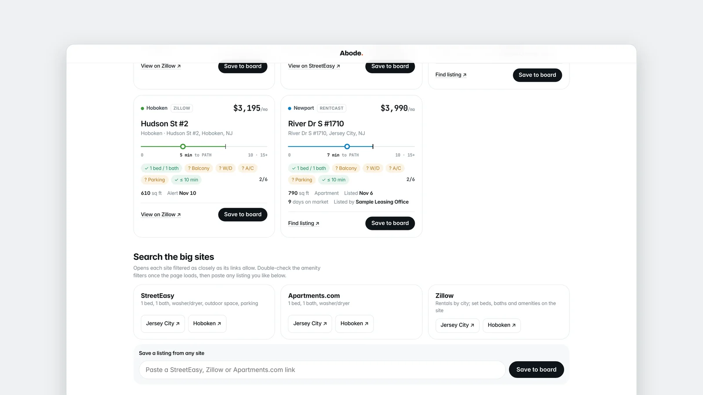
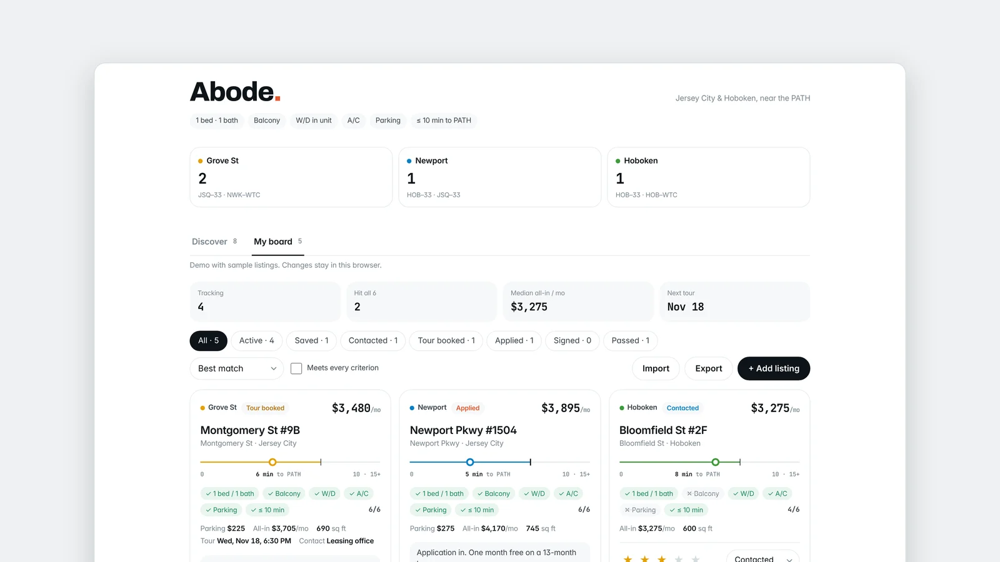
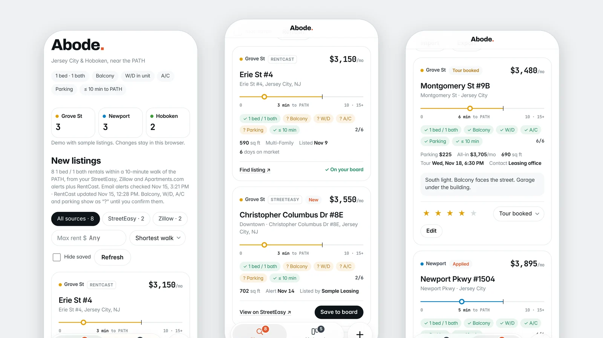
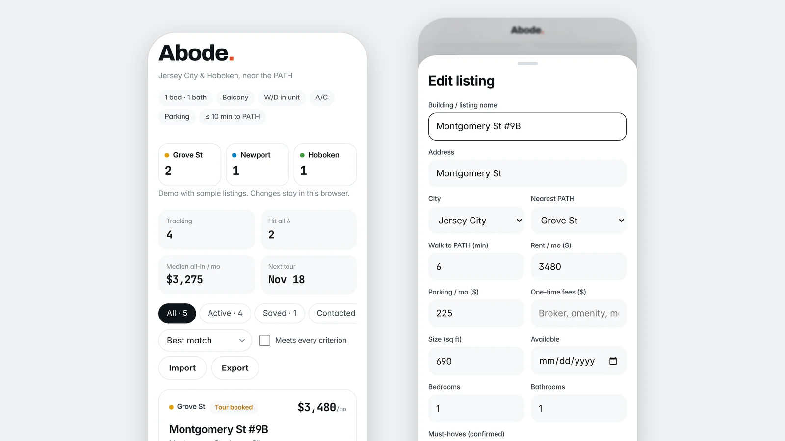

Abode
An apartment tracker built around the walk to the PATH, for a 1 bed / 1 bath in Jersey City and Hoboken.
Context
I'm looking for a one bedroom on the other side of the Hudson. The list is short and strict: one bath, a balcony, a washer and dryer in the unit, A/C, a building with parking, and no more than ten minutes on foot to Grove St, Newport or Hoboken PATH.
Filter by station or source, save a listing, move it through the board.
Problem
Every listing site can filter by bedrooms. None of them can tell you how far a unit is from a specific PATH entrance, and amenity filters are inconsistent from site to site. Listings arrive in three apps and a dozen emails, and the shortlist ends up in my head.
Approach
One place that pulls listings in, scores each one against the six must-haves, and puts the walk to the train front and center. Built as a static web app with one serverless function, deployed on Vercel, and designed to live on my home screen.

Discover. Station counts up top, every new match below.
The walk ruler
Every card carries a 0 to 15 minute scale with the ten-minute line drawn in. The walk is estimated from the address: straight-line distance to the nearest station, times 1.25 for the street grid, at 3 mph. Each must-have is a chip that reads confirmed, missing or unknown, and the card totals them out of six.

Six for six at six minutes, and four for six at eight.
Sources
StreetEasy, Zillow and Apartments.com don't offer APIs, and scraping them breaks their terms. So Abode reads the alert emails they already send. A scheduled agent opens new alerts in Gmail, keeps the 1 bed / 1 bath units in Jersey City and Hoboken, geocodes each address and commits the results to the repo. RentCast's API fills in the rest. Amenities aren't in any of these feeds, so they stay unknown until I confirm them.

Pre-filtered searches on each site, and a field to save any listing by its link.
The board
Saved listings move from Saved to Contacted, Tour booked, Applied and Signed, or Passed. The board adds parking to rent for an all-in monthly cost, tracks fees, tours and contacts, and sorts by best match. It lives in the browser with JSON export and import, so there's no account to make.

Median all-in rent and the next tour, above the shortlist.
iOS 27
Apartment hunting happens on a phone, so Abode follows iOS 27. Discover and the board sit in a floating Liquid Glass tab bar with a separate add button. The top bar turns solid when content scrolls under it, the way iOS 27's scroll edge works. Type is SF Pro at iOS sizes, controls are capsules with 44 pt targets, inputs are 16 px so Safari doesn't zoom, and the add sheet has a grabber and drags to dismiss. With Reduce Transparency or Increase Contrast on, the glass turns solid.

The header, the feed under the tab bar, and the board.

The board, and a listing open in the edit sheet.
Try it
This demo runs on sample listings. Save one, change a status, or add your own. Changes stay in your browser.
Not a recording. Or open it full screen.
Summary
Abode turns an apartment search into one list, scored the way I'd score it myself, with the walk to the train answered before I book a viewing.
Next steps
Sync the board across devices, use real walking routes instead of the estimate, and flag price drops on listings already on the board.